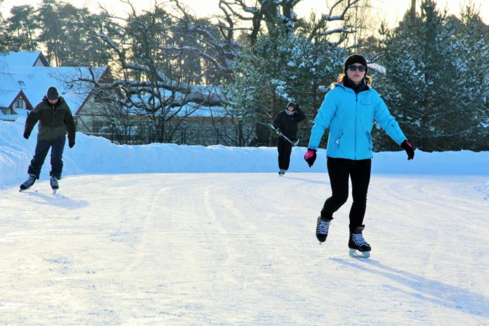
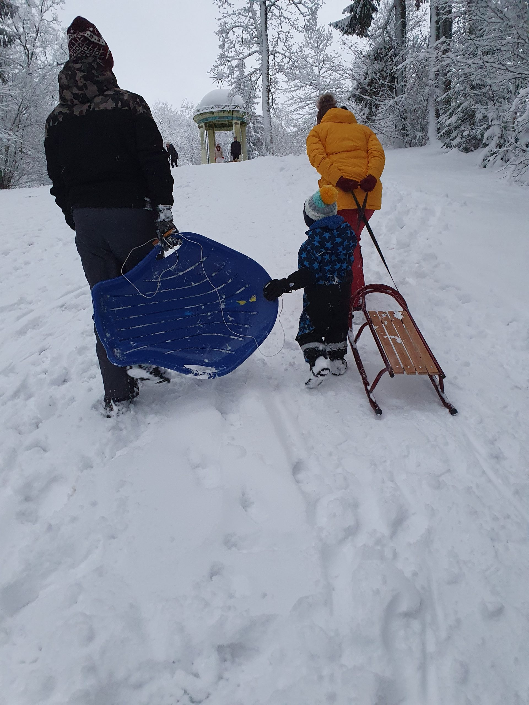
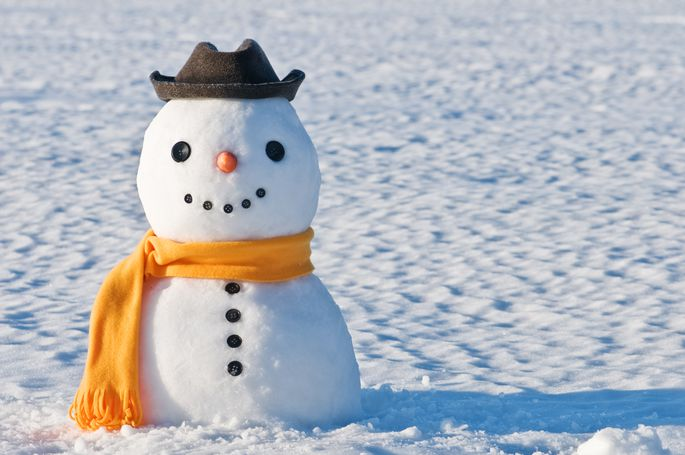

Ziemas izklaides dabā.
Šeit atrodami daži piemēri laika pavadīšanai dabā gada aukstajos mēnešos - gan nodarbes, gan vietas šīm nodarbēm.
-
Slidošana - viens no populārākajiem ziemas sportiem, kas oriģināli aizsākās tepat zem klajas debess.

Papildus informācija par slidošanu.
-
Braukšana ar ragaviņām - vēl joprojām aktuāls laika pavadīšanas veids, kam vajag kārtīgu vietu.

-
Sniega celtņu veidošana - vienkāršākā, bet pavisam ne garlaicīgākā ziemas izprieca.

Dažas vietas izklaidēm.